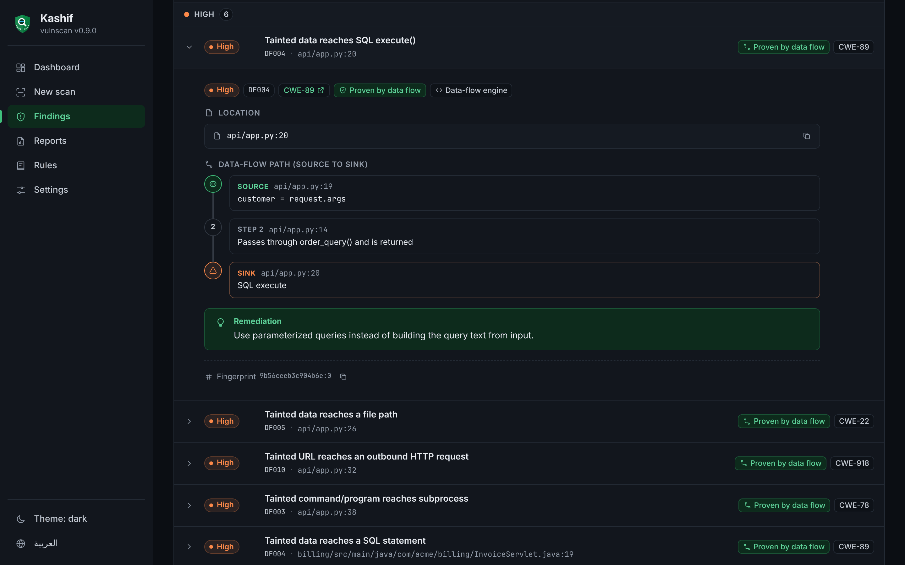
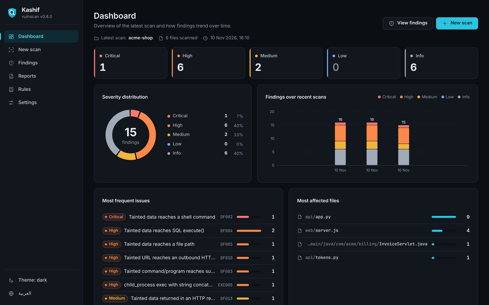

Trace every vulnerability from input to impact.
Kashif is a free, open-source SAST tool for developers and security teams. It follows untrusted input across functions and files in 12 languages, Oracle APEX and Android apps, and shows the exact source-to-sink path behind every dataflow finding. Zero dependencies. Runs entirely on your machine.

- 74.0%OWASP Benchmark score, Python
- 98.3%OWASP Benchmark score, Java
- 12languages with dataflow analysis
- 0runtime dependencies
- SARIF 2.1.0for GitHub Code Scanning
- SBOM + SLSAattached to every release
A complete security workbench on localhost.
Dashboard, findings, data-flow traces, scans and reports in a local web UI, in English and Arabic, light and dark. No account, no server to install, nothing uploaded.

Severity totals, the most frequent rules and recent scans at a glance.
From source to sink, with the evidence attached.
Kashif builds a model of your program, follows untrusted data through it, and reports only where that data reaches a dangerous operation, with every step shown.
Source
Finds where untrusted data enters: request parameters, headers, cookies, files, environment variables and APEX page items.
Data flow
Propagates taint through assignments, calls, fields, collections and database tables, across functions and files. A sanitizer clears it only for the sinks it actually defends.
Sink
Reports when tainted data reaches a dangerous API (SQL, shell, file paths, templates, deserialization, redirects) with the CWE, the full path and how to fix it.
1import os2from flask import Flask, request34app = Flask(__name__)56@app.route("/ping")7def ping():8 host = request.args.get("host")source9 cmd = "ping -c 1 " + host10 os.system(cmd)sink11 return "ok"
- 1source
request.args.get("host")app.py:8 - 2flow
cmd = "ping -c 1 " + hostapp.py:9 - 3sink
os.system(cmd)app.py:10
One scanner for code, apps, archives and sites.
Pattern rules, a cross-file dataflow engine and a query language, plus verified autofixes, secrets, dependency vulnerabilities with reachability and passive web checks, in a single tool that runs anywhere.
Dataflow (taint) analysis
Tracks untrusted input across functions, classes and files, and attaches the full source-to-sink path to every finding.
Flow- and context-sensitive
Constant folding and dead-branch pruning, plus context-sensitive (k=2) points-to analysis, so one factory called from two places yields two distinct objects.
Context-specific sanitizers
html.escape protects HTML, not SQL or a shell. A sanitizer clears only the sinks it actually defends.
Second-order injection
Follows user data written to a database table and later read back into SQL or a shell command: stored injection, in every language.
Secrets, now and in git history
Provider-specific patterns for cloud, payment and messaging keys, plus entropy analysis that catches keys with no known format. kashif history finds every secret ever committed, even if a later commit deleted it.
Dependencies with reachability
Reads 23 manifest and lockfile types, looks up known vulnerabilities in OSV.dev, and tells you whether your code imports the package and calls the vulnerable function. The lookup is optional and the only network call a code scan makes.
Archives, APK and JAR
Scan a zip, tar.gz, APK, JAR, AAR or DEX directly. With jadx installed, Android and Java bytecode is decompiled and analyzed.
Passive web checks
184 read-only checks of redirects and HSTS, CSP, headers, CORS, cookies, page content, TLS and certificates, libraries and exposed files, with Kashif and MDN Observatory grades and a coverage table that never shows an untested check as passed.
Your own rules
Write checks in VQL, a declarative from/where/select language over the program database in the style of CodeQL, then test, pack and share them with kashif rules.
Verified autofix
Deterministic fixes for 39 rules, from parameterized SQL to yaml.safe_load. A fix is offered only after the patched file parses and the rule no longer matches; review the diff, or apply it with --fix.
Triage, policy and compliance
Triage decisions kept in the repository, a kashif.yml policy gate, mapping to 10 frameworks (OWASP, ASVS, CWE Top 25, PCI DSS, NIST, ISO 27001…) with an auditor report, and an attack-surface map.
For AI coding assistants
kashif mcp is an MCP server: Claude Code, Cursor, VS Code agents, Windsurf and Zed can check the code they write, locally and offline. It never runs your code.
12 languages with dataflow, and the places other scanners skip.
The same taint engine runs on every language below, alongside pattern rules for configuration, containers and CI files.
- Python
- JavaScript / TS
- Java
- Kotlin
- C#
- Go
- PHP
- C / C++
- Rust
- Swift
- Ruby
- PL/SQL
Oracle APEX and ORDS
Analyzes APEX application exports, plug-ins and PL/SQL packages for SQL injection, substitution strings, XSS and AI-assistant prompt injection, and points to the page and component.
Android APK and JAR via jadx
Unpacks APK, JAR, AAR and DEX files and runs dataflow analysis on the decompiled code. Third-party libraries are excluded by default.
Passive web scan
Plain GET requests to a site you are authorized to test, within a stated budget (minimal: the page and its redirects, standard: up to 45, deep: up to 150), at least 0.2 s apart: no payloads, no form submission, no brute forcing. Requires --authorized.
Fits the pipeline you already have.
Upload SARIF to GitHub Code Scanning and findings appear in the Security tab and inline on pull requests, with severity, CWE and the data-flow path.
name: vulnscan on: [push, pull_request] permissions: contents: read security-events: write # required to upload SARIF jobs: scan: runs-on: ubuntu-latest steps: - uses: actions/checkout@v4 - uses: actions/setup-python@v5 with: { python-version: "3.12" } - run: pip install git+https://github.com/abdulrahmanahmedelabed-prog/vulnscan - run: kashif . --no-deps -f sarif -o vulnscan.sarif - uses: github/codeql-action/upload-sarif@v3 if: always() with: sarif_file: vulnscan.sarif
Baseline: report only what's new
Record today's findings once and commit the file (fingerprints only, no code). Later scans report, and fail CI on, new findings alone. Fingerprints survive line shifts and reformatting.
Audit profile
For security reviews, --audit also lists every dangerous call (eval, shell, SQL, pickle…) that dataflow analysis could not prove reachable, so reviewers see the whole attack surface.
Reports for the tools you use
SARIF is validated against the OASIS 2.1.0 schema and opens in GitHub and VS Code; exports go to DefectDojo, SonarQube, GitLab, Code Climate, Jira, GitHub Issues, AWS Security Hub and more. Every finding carries a stable fingerprint.
In your editor
The same findings as the CLI, in VS Code and any LSP editor: severity, CWE and the cross-file data-flow trail on hover, with quick fixes to apply a verified fix, suppress a finding or add it to the baseline. Offline; nothing leaves your machine.
On every pull request
PR review comments on GitHub, GitLab SAST and Code Quality reports, and a pre-commit hook. Diff-aware scans report only what the branch changed.
Measured in public. Reproducible with one command.
We score Kashif on the OWASP Benchmark and publish every category, including the weak ones.
OWASP Benchmark · test cases. Score = mean over categories of true-positive rate minus false-positive rate (Youden's J).
| Category | TPR | FPR | Score (TPR − FPR) |
|---|
How Kashif compares, honestly.
The established tools are excellent. Here is where each one is strong, and where Kashif fills a gap.
| Capability | Kashif | Semgrep | SonarQube | Snyk Code | CodeQL | Bandit | Trivy |
|---|---|---|---|---|---|---|---|
| Dataflow (taint) analysis | 12 languages | Pro (cross-file) | Deepest | AST only | |||
| Rule and library-model breadth | Growing | Large | Large | Large | Large | Python only | IaC and config |
| IDE and pull-request integrations | VS Code, LSP, PR comments | Limited | |||||
| Years of real-world tuning | New | ||||||
| Runs fully local, no account | Community Edition | Self-hosted server | Cloud account | CLI | |||
| Runtime dependencies | None | Binary | Java + database | CLI + account | CLI bundle | pip | Binary |
| Oracle APEX and PL/SQL | Code + dataflow | PL/SQL (commercial) | |||||
| Archives, APK and JAR | With jadx | Images and artifacts | |||||
| Passive web scanning | Separate product | ||||||
| Local web UI | Built in | Cloud app | Self-hosted server | Cloud app | On GitHub | ||
| Arabic interface and reports | |||||||
| Price | Free (MIT) | Free tier + paid | Free tier + paid | Free tier + paid | Free for public repos | Free | Free |
Where the established tools lead
Semgrep, SonarQube, Snyk Code and CodeQL have far more rules and library models, IDE and pull-request integrations, and years of tuning on real codebases. If you already run them, keep them.
Where Kashif fits
Fully local with zero dependencies, Oracle APEX and PL/SQL, archives and Android apps, passive web checks and an Arabic interface in one tool. It can also merge Semgrep, Bandit, gitleaks and npm audit results into its dashboard.
Known limitations
- Static analysis does not replace human review or penetration testing.
- Far fewer library models than the established tools, and less tuning on large real-world codebases.
- Not yet modeled: templates other than Jinja (EJS, ERB) and values passed between PHP files through include.
- Without jadx, APK and JAR contents are scanned as text only.
Verify every byte you run.
A security tool should meet the bar it sets. Every release is built in GitHub Actions and ships with the evidence you need to check it.
SLSA build provenance
Signed attestations prove each binary was built from this repository by its release workflow.
CycloneDX SBOM
A software bill of materials ships with every release as kashif-sbom.cdx.json.
SHA-256 checksums
SHA256SUMS.txt lets you confirm that every download is intact.
Hardened CI
Every GitHub Action is pinned by commit SHA with least-privilege tokens, monitored by OpenSSF Scorecard and Dependabot.
No dependency tree
Standard library only: nothing is pulled in at install or run time, so there is no transitive supply chain to attack.
Private disclosure
Report vulnerabilities privately through GitHub, as described in our security policy.
# 1. Check the file against the published checksums sha256sum -c SHA256SUMS.txt --ignore-missing # 2. Verify the signed SLSA build provenance (GitHub CLI) gh attestation verify kashif-linux-x86_64 \ --repo abdulrahmanahmedelabed-prog/vulnscan
Download Kashif v__VERSION__
An installer for Windows and single-file programs for every system. Run Kashif with no arguments to open the web UI, or pass a path to scan from the command line.
Windows
kashif-setup.exex64 · Installer (recommended)Download for Windowsor the portable .exe (no install)Linux
kashif-linux-x86_64x86-64 · Ubuntu 22.04+, Debian 12, RHEL 9+Download for Linuxor install with one commandmacOS · Apple Silicon
kashif-macos-arm64arm64 · M1 and laterDownload for Apple Siliconor install with one commandWindows
Run kashif-setup.exe and follow the steps. Then open Kashif from the Start menu, or use it from any new terminal:
No install? Download kashif-windows-x86_64.exe and double-click it to open the web UI, or run it from a terminal with a path to scan.
Linux
Make the file executable, then run it:
macOS
Easiest: Homebrew or the one-command install below (no quarantine step). If you downloaded the file in a browser, remove the quarantine flag once before the first launch:
Which file do I need?
Every release has the same files. Most people need just one: the file for their system above.
- kashif-setup.exeWindowsInstaller. Adds Kashif to the Start menu and to PATH (you can untick it), and uninstalls from Windows Settings. The one to pick on Windows.
- kashif-windows-x86_64.exeWindowsThe same program as a single portable file; nothing is installed. For a USB stick, a PC where you cannot install, or CI.
- kashif-linux-x86_64LinuxSingle-file program for 64-bit Linux. Make it executable and run it.
- kashif-macos-arm64macOSFor Macs with Apple Silicon (M1 and later).
- kashif-macos-x86_64macOSFor Macs with an Intel processor.
- kashif-vscode.vsixVS CodeExtension that shows findings inside VS Code as you work. Install Kashif first (it must be on PATH), then in VS Code: Extensions → ⋯ → Install from VSIX.
- SHA256SUMS.txtThe SHA-256 checksum of every file, to confirm a download is intact.
- kashif-sbom.cdx.jsonSoftware bill of materials (CycloneDX): everything Kashif is built from.
- vulnscan-*The same programs under Kashif's old name, kept so versions before 1.0 can update themselves. You don't need them.
Install with one command
Downloads the release for your machine, verifies its SHA-256 before installing, and puts kashif on your PATH (vulnscan still works as an alias). On macOS no quarantine step is needed.
Or install with pip
Python 3.10 or later. No runtime dependencies are installed.
Questions, answered.
Is Kashif free?
Does Kashif upload my code?
Can it run offline or in an air-gapped network?
How accurate is it?
Which languages and targets are supported?
How do I use it in CI?
How does it compare with Semgrep, SonarQube, Snyk Code or CodeQL?
How do I report a security issue in Kashif?
Start scanning in a minute.
Download one file, point it at a project, and read a report ordered from critical to info, with the data-flow path behind every dataflow finding.